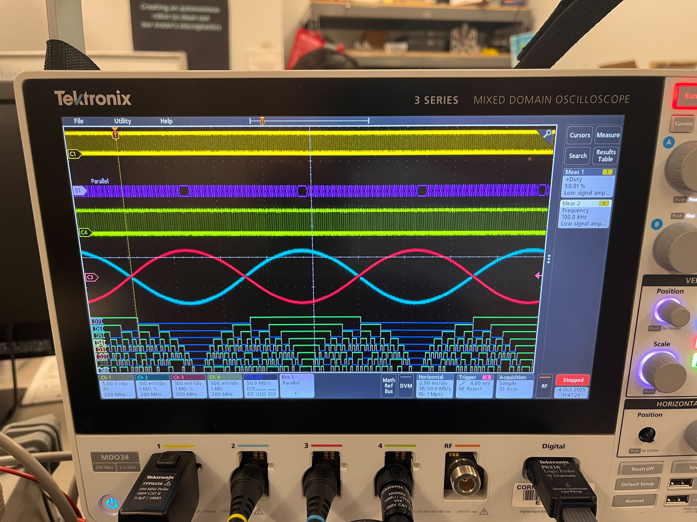
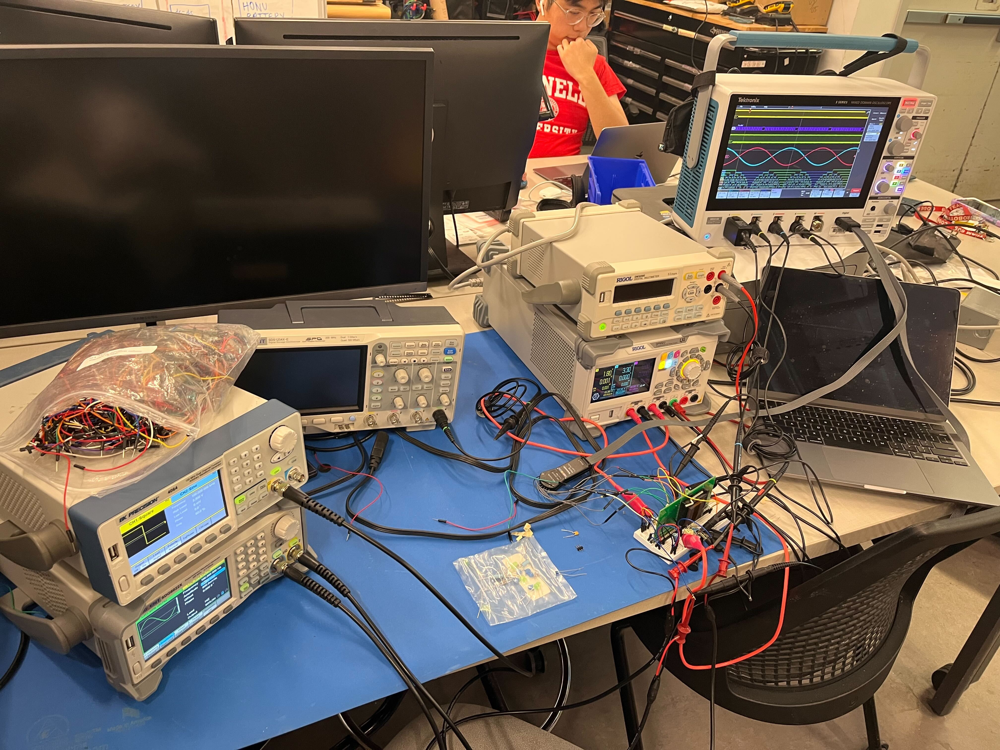

4.44MS/s Trully & Fully Differential 8-Bit SAR ADC in TSMC 180nm


Project Overview
This SAR ADC was implemented, along with my co-subteam lead Caden Xu, during my sophomore year as part of the analog subteam of Cornell Custom Silicon Systems (C2S2). We first began design in Skywater 130nm, but following Efabless (our MPW provider) going bankrupt, we switched to TSMC 180nm, and were able to tape out our entire design, including test structures and a custom mixed-signal padring with little more than 100 days from bankruptcy to tapeout deadline.
This chip utilizes custom Verilog control logic to implemented inverted merged capacitor sampling, which was synthesized and placed and routed by our physical design subteam, thus representing C2S2s first true mixed-signal tapeout.
Testing Images

